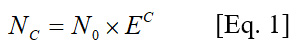
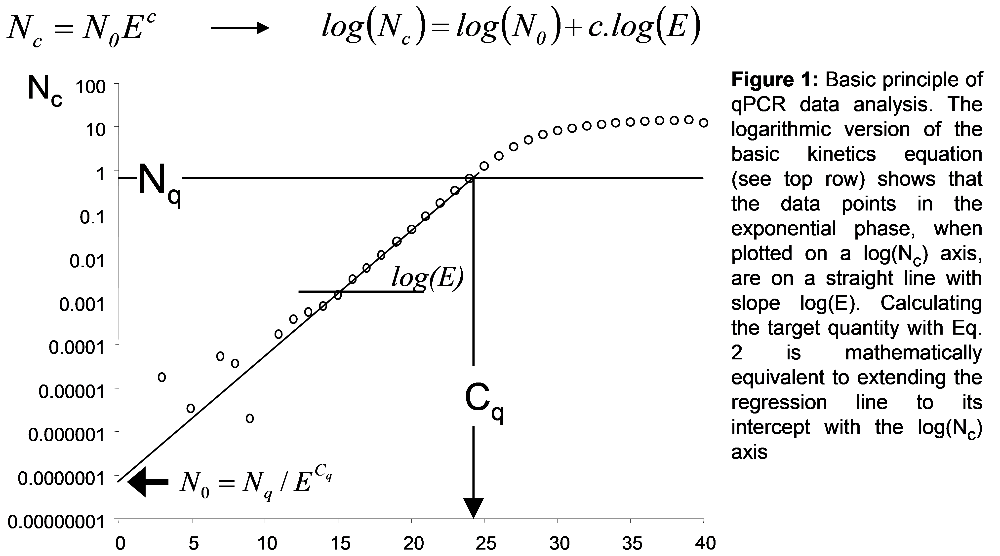
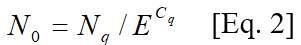
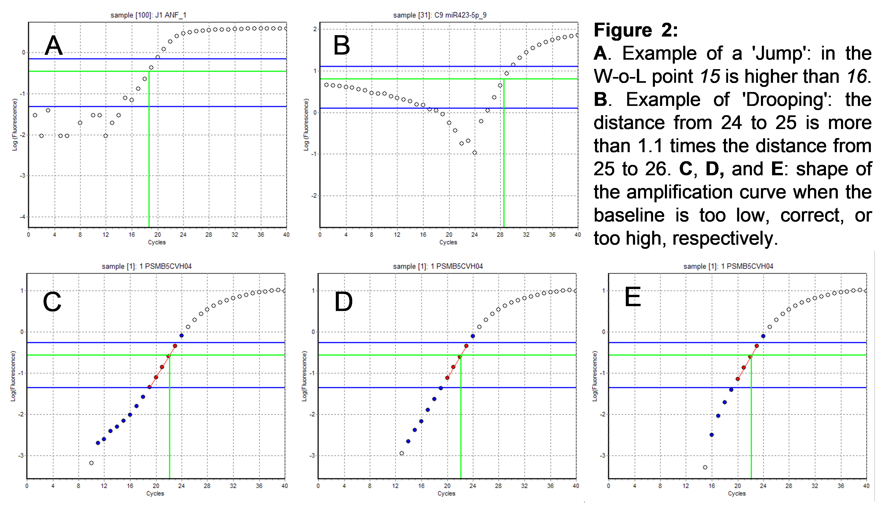

Table of Contents
- 1. Introduction
- 2. How to Cite
- 3. License
- 4. RDML Data Standard
- 5. Import Data into RDML
- 6. RDML-Edit
- 7. RDML-TableShaper
- 8. RDML-LinRegPCR
- 8.1. Introduction
- 8.2. A Word of Warning
- 8.3. LinRegPCR References
- 8.4. Definitions of Terms Used in This Manual
- 8.5. Theory behind the LinRegPCR program
- 8.6. Baseline Estimation and flagging of deviating samples
- 8.7. Mean Efficiency Calculation
- 8.8. Window-of-Linearity and Threshold
- 8.9. Probes-based monitoring chemistries
- 8.10. Differences Between Pascal and Python Version
- 8.11. Howto Prepare RDML files
- 8.12. Run LinRegPCR
- 8.13. Acknowledgements
- 9. RDML-RunView
- 10. RDML-Validate
1. Introduction
1.1. General Introduction
The Real-time PCR Data Markup Language (RDML) is a structured and
universal data standard for exchanging quantitative PCR (qPCR) data and digital PCR (dPCR) data. The data standard
should contain sufficient information to understand the experimental setup, re-analyse the data and interpret the
results. It was designed to enable transparent exchange of annotated qPCR data between instrument software and
third-party data analysis packages, between colleagues and collaborators, and between authors, peer reviewers,
journals and readers.
The RDML-Tools center around the
RDML data format. The
RDML-Tools mainly provide a web page
access to the functions of the
RDML-Python library, designed to
handle RDML files and their dependencies. Users may choose to install the library as a
python package calling
"python -m pip install rdmlpython". All software is GPL licensed except the RDML-Python library being MIT
licensed.
1.2. Tool Overview
RDML-Edit is the main tool to view and edit RDML data up to the run level. Selected runs can be views can be visualized with RDML-RunView or analyzed with RDML-LinRegPCR. With classic qPCR the amplification- or meltcurves are displayed, with digital PCR the positive and negative counts are shown. RDML-TableShaper helps to reformat exported files from machines lacking RDML support. RDML-Validate validates a RDML file against the corresponding schema.
2. How to Cite
We are preparing a publication. Please come back and check for updates.
3. License
Please read the Terms of Use before using the RDML-Tools and please obey to the requirements. The individual licenses are found in the respective GitHub repositories. The RDML-Tools mainly provide a web page access to the functions of the RDML-Python library, designed to handle RDML files and their dependencies. Users may choose to install the library as a python package calling "python -m pip install rdmlpython". All software is GPL licensed except the RDML-Python library being MIT licensed.
4. RDML Data Standard
The RDML data standard is a compressed
text file in Extensible Markup Language (XML). By design, it collects the
information of different experimenters, dyes, samples, targets and thermal cycling conditions separately to
experiment/run information, were this information is only referenced by the unique ID. In a final RDML file for
example one target might be referenced many times. The RDML-Tools and RDML-Python library were created to handle
this dependencies and allow modification of an ID with updating all the references.
RDML evolved over the years and there are several versions available today. The RDML-Tools can convert between the
versions. Upload the file to RDML-Edit, activate the edit mode on the main tab and the migration buttons are
available on the more tab. Version 1.0 is automatically converted to version 1.1, the lowest supported version by
the RDML-Tools. Newer versions offer new and may remove obsolete functionality. Be aware that digital PCR is only
supported from version 1.3 on.
RDML was first published in
"RDML: structured language and
reporting guidelines for real-time quantitative PCR data" in 2009. Version 1.2 and the database RDMLdb were
introduced in "RDML-Ninja and RDMLdb for
standardized exchange of qPCR data" in 2015.
5. Import Data into RDML
5.1. Machine Export
Importing data is always the second best choice to having a native RDML export in your qPCR machine. If a purchase
is planned, consider one of the
machines with RDML support.
Without RDML export in your machine, you have to recreate the data first. Run RDML-Edit and create a new file on
the main tab and and enable editing with the "enable edit mode" button. For digital PCR, the version needs to be
1.3 or above which can be set on the more... tab.
5.2. Classic PCR
Most machines offer an export of the raw data. Unfortunately, there is no consent on the format of this export.
Follow the instructions for RDML-TableShaper to convert the export into the standard table
RDML import format. Select or create a new experiment on the experiments tab. Create a new run and provide the
file from TableShaper at "Import Amplification Data".
5.3. Digital PCR
Currently only Bio-Rad and Stilla export files are supported. Select or create a new experiment on the experiments tab. Create a new run and provide the results or overview file at "Import Digital Data Overview" and the files with the raw well data at "Import Digital Data Wells". Although import without an overview file is possible, naming samples and targets will be very laborious and not recommended.
5.4. Supplement Remaining Data
Last, data for all the samples, targets and thermal cycling conditions have to be added or supplemented after raw data import using the edit button on the respective elements.
6. RDML-Edit
RDML-Edit is a powerful tool to view and edit RDML files. RDML files supports many optional parameters and each
parameter has many sub-parameters, of which many are not used in the current file. Be reminded, that a for
example a target is described once in the targets and identified by its unique id. In the data elements of each
reaction the target is then only referenced by its id.
Be aware that RDML-Edit by default only allows viewing of files. RDML supports many optional parameters to
describe a qPCR or digital PCR reaction. RDML-Edit will hide all parameters which were not entered by
the user. To modify files enable the edit mode using the button on the main tab. Enabeling the edit mode
will switch RDML-Edit in a different mode and enable many buttons and options to modify each element or create
new ones. RDML does support different versions with different functionality. RDML-Edit can migrate between
different versions on the more... tab if the edit mode is activated. Digital PCR is only supported from
version 1.3 on. Please read the
Data Standard section for an understanding of the basic RDML concepts.
The modified RDML-files can be saved and downloaded on the main tab.
7. RDML-TableShaper
RDML-TableShaper is a tool to shape tables with amplification data for the import with RDML-tools. This is
error-prone and second best to original RDML export by the machine. As some machines do not offer RDML export,
TableShaper might help. All qPCR machines enable the export of the fluorescence data per cycle, although some
only export into a text file format. Note that the exported data have to be corrected for the technical
background and, if used, the internal reference fluorescence (e.g. ROX) but should NOT be corrected for the
fluorescence baseline. If the machine exports Excel files, please convert them by opening in Excel (Microsoft)
or Calc (Libre Office), selecting the table with the amplification data and save as tab separated text file. The
tab separated text file can be modified using TableShaper.
TableShaper follows four consecutive steps (work the tabs from left to right). If you modify information on a
previous tab to the left, all information in the later tabs are overwritten and must be reentered. The four
steps are:
1. The table separators have to be identified on the first tab. If it does not work out automatically, the
separator has to be selected manually. The table columns need to be recognized in the table below.
2. The content need to be recognized in the second tab. If your table format is not found in the predefined
settings, you may iteratively select the parameters and load / save them for later use. Adapt the "Number of
columns to keep" and "Number of rows to keep" to match the experiments cycle and well numbers and avoid cutoff.
"Settings to reshape the table" is the most dramatic shaping option. You can opt to flip the table or to build
a table from value list. The result is drawn below and can be used to select the columns for data extraction.
You may opt to send us the file to include it in the list with default parameters.
3. Fill the missing content in the third tab. To be able to import the table into RDML, the first six columns have
to be filled. Using the fields on the third tab eases this step as squares B2-D7 can be used. Take care in this
step as errors in the target id and sample id can not be fixed in RDML later. Save the result as .tsv file.
4. To create an RDML file fill the information on the "Create RDML file" card and hit the button. RDML-Edit will
open with the created RDML file and allow to save or view the RDML file.
Alternatively the data can be imported int existing RDML files. Open the RDML file in RDML-Edit (or create new)
and enable editing with the "enable edit mode" button. Now change to the experiments tab and open an experiment
or create a new experiment. In the experiment, create a new run. Take care to set the ID and PCR-Format fields
correctly. Now select the exported .tsv file in "Import Amplification Data". Once saved you can inspect the result
using RunView or save it as RDML file on the first tab.
8. RDML-LinRegPCR
8.1. Introduction
LinRegPCR is a program for the analysis of real time RT-PCR Data, also called quantitative PCR (qPCR) data.
The program uses non-baseline corrected data, performs a baseline correction on each sample separately,
determines a window-of-linearity and then uses linear regression analysis to determine the PCR efficiency per
sample from the slope of the regression line. The mean PCR efficiency per amplicon and the Cq value per sample
are used to calculate a starting concentration per sample, expressed in arbitrary fluorescence units. Data
input and output are in RDML format and additional reports create tab seperated spreadsheet *.tsv files, which
can be imported into programs like Excel (Microsoft) or Calc (OpenOffice).
The linear regression procedure used in this program can be found in every statistics textbook.
8.2. A Word of Warning
LinRegPCR is based on the procedures described in the paper by Ruijter et al., Nucleic Acids Research, 2009. The procedures in this program can be used for fluorescence data resulting from monitoring the PCR reaction. You should preferably use raw fluorescence data and thus you should check which data are exported by your PCR system. Negative values should not occur. The fact that LinRegPCR can read the data should not be seen as proof that you have the correct data. By using this software you acknowledge that you have read the above paper, understand it, and agree with its conclusions. Therefore, you assume all responsibility and liability for the selection of this program to achieve your intended goals, and for the conclusions you draw from the results. The authors cannot be held responsible for any consequences of the use of this program. Please read the Terms of Use before using LinRegPCR and please obey to the requirements.
8.3. LinRegPCR References
When you refer to LinRegPCR in your paper, we prefer that you use the reference
Ruijter et al., Nucleic
Acids Research 37: e45, 2009. Acids Research 37: e45. When you are using hydrolysis probes, you can
also use the reference Tuomi et al. (2010) Methods 50: 313–322. The handling of other chemistries is described
in Ruijter et al. (2014) Microchimica Acta). A comparison of the different amplification curve analysis
approaches can be found in Ruijter et al. (2013) Methods 59: 32-46.
Please do not use the abbreviation LinReg when you refer to LinRegPCR.
Ruijter JM, Lorenz P, Tuomi JM, Hecker M, van den Hoff MJB (2014)
Fluorescent increase kinetics of
different fluorescent reporters used for qPCR depends on monitoring chemistry, targeted sequence, type of
DNA input and PCR efficiency.
Microchimica Acta.
This paper is an extension of Tuomi et al. (2010) and describes the processing of qPCR data resulting
from 6 different categories of monitoring chemistries.
Ruijter JM, Pfaffl MW, Zhao S, Spiess AN, Boggy G, Blom J, Rutledge RG, Sisti D, Lievens A, De Preter K,
Derveaux S, Hellemans J, Vandesompele J. (2013)
Evaluation of qPCR curve analysis methods for reliable
biomarker discovery: bias, resolution, precision, and implications.
Methods 59: 32-46.
This paper describes the comparison of the performance, in terms of precision, linearity, and
sensitivity of all available curve qPCR analysis methods using the same biomarker data sets.
Tuomi JM, Voorbraak F, Jones DL, Ruijter JM. (2010)
Bias in the Cq value observed with hydrolysis probe
based quantitative PCR can be corrected with the estimated PCR efficiency value.
Methods 50, 313–322.
This paper describes the use of LinRegPCR in the analysis of cumulative fluorescence datasets obtained
with hydrolysis probes like Taqman probes.
Ruijter JM, Ramakers C, Hoogaars W, Bakker O, van den Hoff MJB, Karlen Y, Moorman AFM. (2009)
Amplification
efficiency: linking baseline and bias in the analysis of quantitative PCR data.
Nucleic Acids Research 37: e45.
This paper describes the basics of the LinRegPCR program and gives details on the fluorescence baseline
correction and setting of the window-of-linearity.
Ramakers C, Ruijter JM, Lekanne Deprez RH, Moorman AFM. (2003)
Assumption-free analysis of quantitative
real-time PCR data.
Neurosci Letters 339: 62-66.
This paper describes the estimation of PCR efficiencies for individual samples from a subset of data
points in the log-linear phase of the amplification curves. Such handling of individual samples is no longer
recommended (JMR 2013).
8.4. Definitions of Terms Used in This Manual
Amplicon group: A set of samples in which the same target (pair of primers) is used to amplify the
DNA-of-interest (=amplicon).
Baseline: Measured fluorescence when no amplification-specific fluorescence can yet be determined.
This fluorescence includes fluorescence from cDNA, primers and unbound SYBR Green or inefficiently quenched
fluorescently labeled probe.
Cq or quantification cycle: Fractional number of cycles needed to reach the fluorescence threshold.
Samples with higher starting concentrations will reach this threshold earlier and will have a low Cq value;
Cq is used to calculate N0. Cq is also known as Cp or Ct but the use of those terms is discouraged by the
MIQE guidelines (Bustin et al., Clinical Chemistry 2009)
Cumulative fluorescence: Observed fluorescence data obtained when the PCR amplification is monitored
with a monitoring system for which fluorescence accumulates. These reporters become fluorescent during
annealing or elongation and the fluorescent accumulates during subsequent cycles.
E or PCR Efficiency: Amplification efficiency expressed as a value between 1 and 2 and is thus defined
as “the fold increase per cycle”. This efficiency is calculated from the slope of the amplification curve in
the exponential phase. Ideally the PCR efficiency is 2, meaning that in each cycle the amount of amplicon
doubles. This is also referred to as a 100% efficient PCR. An efficiency value of 1 means no amplification.
Exponential or log-linear phase: The portion of the PCR curve in which the level of generated
fluorescence exceeds baseline fluorescence, but reagents have not yet begun to be limiting. In this phase
the amplification efficiency is constant and similar across all samples in an amplicon group regardless of
their starting concentration.
Fluorescence threshold, quantification threshold or Nq: Fixed amount of fluorescence, set to determine
the Cq value. By default set at one cycle below the upper limit of the window-of-linearity.
N0: Target quantity or starting concentration per sample, expressed in arbitrary fluorescence
units. The N0 value of a target and one or more reference genes can be used to calculate the
efficiency corrected gene expression ratio.
Non-cumulative fluorescence: Observed fluorescence data obtained when the PCR amplification is monitored
with a DNA binding dye or hybridization probe. The reporter is only fluorescent when bound to dsDNA;
fluorescence intensity is proportional to the amount of DNA present at each cycle.
Nq: see Fluorescence threshold
Plateau phase: Endpoint of the PCR reaction - the phase in which reaction components become limiting.
In the plateau phase the amplification curves of the real-time PCR are no longer exponential and the PCR
efficiency drops to 1.
Raw data: Fluorescence data that is not baseline-corrected by the PCR system. Raw data should not
contain negative values.
Sample: Reaction unit (well in a PCR plate)
Tissue: Biological material in which DNA or RNA levels have to be determined. A tissue can be measured
in different wells to measure different genes.
Window-of-Linearity or W-o-L: Subset of data points in the exponential phase that is used to determine
the PCR amplification efficiency (E) per sample. The Window-of-Linearity is set automatically by the program
but can be modified by the user. Default the W-o-L width is set to include 4 amplification cycles.
8.5. Theory behind the LinRegPCR program
Basic principle
The basic equation for PCR kinetics is:

Where the amount of amplicon after C cycles (Nc) is the starting concentration of the amplicon
(N0) times the PCR efficiency (E) to the power C. The PCR efficiency in this equation is defined as
fold increase per cycle. It is therefore expressed as a value between 1 and 2 where an efficiency of 2
represents a perfect doubling of the amplicon in each cycle This is also referred to as a 100% efficient PCR.

LinRegPCR is based on the fact that, when plotted on a log-fluorescence axis, the slope of the linear
regression line through the data points in the exponential phase of the amplification curve can be used to
estimate the PCR efficiency (E) (Ramakers et al 2003).
After setting the quantification threshold Nq and determining the fractional cycle number that was needed
to reach this threshold (Fig. 1), the starting concentration or target quantity can be calculated with the
inverse of Eq. 1:

The Efficiency value used in Eq. 2 is the mean of the observed efficiencies per amplicon (Ruijter et al 2009).
Different monitoring chemistries
Because their fluorescence is linearly related to the amount of the amplicon, Eq. 1 describes the increase in
fluorescence for PCR runs monitored with a DNA binding dye. However, some monitoring chemistries, the
fluorescent reporter is released from quenching during elongation and remains fluorescent in subsequent cycles;
fluorescence thus accumulates. For other chemistries, the first release of fluorescence occurs only after a
number of initial lag-cycles. Some chemistries combine lag with accumulation. The different kinetics lead to a
shift in the Cq values of these curves and correction for the observed, earlier or later, Cq values is
implemented (Tuomi et al 2010; Ruijter et al., 2014). The required correction depends on the input DNA
(ss cDNA or ds DNA) and the chemistry; the targeted sequence in case of fluorescent probes (mRNA or cDNA
strand) does not displace the amplification curve observably.
Plotted on a logarithmic fluorescence axis every chemistry shows the amplification curve for each reaction as
a straight line, with a slope equal to log(E). This is true for all probe-based chemistries used for
monitoring DNA increase in a real-time PCR run.
8.6. Baseline Estimation and flagging of deviating samples
LinRegPCR determines the baseline fluorescence per sample by reconstructing the log-linear phase. It determines
the cycle at the maximum of the Second Derivative (SDM) of the observed fluorescence values in each sample.
The SDM cycle is the start of the plateau phase. Then LinRegPCR does an iterative search for a baseline value
that gives the longest straight line of data points down from the plateau phase. For details on the baseline
estimation procedure: see Ruijter et al., Nucleic Acids Research, 2009.
As explained in the above paper, an accurate baseline estimation is a requirement for the correct determination
of E and to a lesser extend Cq. The implemented baseline estimation requires a sufficiently long log-linear
phase and thus optimized qPCR conditions have to be used. However, when the baseline-to-plateau distance is
too small the baseline determination can fail. LinRegPCR determines and flags the following deviating samples
during the process of baseline estimation.
Error Flagging
no-amplification: samples with less than 7-times overall increase between the first cycles and the
last cycles. These samples will be ignored by the program and are always excluded from the calculation of the
mean PCR efficiency and no starting concentration will be calculated.
baseline error: samples for which no baseline value can be determined because no fluorescence value
between the SDM and the minimum observed value results in a straight exponential phase. These samples will be
ignored by the program and are always excluded from the calculation of the mean PCR efficiency and no
starting concentration will be calculated.
noisy sample: sample in which the fluorescence in cycle C is higher than it is in cycle C+1 in a W-o-L
just below the SDM cycle. This high in the exponential phase, the fluorescence values should be continuously
increasing. In such a case, the baseline estimation will result in a warning that the dataset is
too noisy to be analyzed automatically.
no-plateau: samples that do not reach the plateau phase. This assignment cannot be overruled. The user
can decide to include or exclude the no-plateau samples from the calculation of the mean PCR efficiency.
For these samples a starting concentration will be calculated when they are not also an
efficiency outlier.
Reasons for Failing Baseline Estimation
When you encounter a lot of baseline errors and noisy samples it may be that the Log-linear phase in your
dataset is too short. This is most probably because the baseline is too high which is limiting the
baseline-to-plateau distance. The program then has not enough data points in the log-linear phase to estimate
the fluorescence baseline. It may also be that measurement noise leads to discontinuous data in the
log-linear phase. Both problems make that the data points downwards from the plateau phase do not form a
continuously decreasing set of points. Because LinRegPCR uses only the points that are continuously
decreasing from the plateau phase too few points are available for the baseline estimation. In that case the
baseline estimate will be wrong, in most cases too high.

Handling noisy datasets
A noisy sample is defined as a sample in which the data in the window-of-linearity are not continuously
increasing. This mostly occurs when the observation noise is too large. When noisy samples occur,
LinRegPCR cannot accurately determine the fluorescence baseline. So, you probably also have a number of
samples that have a baseline error assigned to them. The program checks for noisy samples immediately
after the estimation of the fluorescence baseline. When noisy samples occur, the program marks noisy samples
for exclusion from calculation of the mean efficiency. Then it determines a common window-of-linearity for
the remaining samples.
Noisy data might occur when the distance between baseline and plateau phase is not large enough which leaves
the program with not enough room to determine the baseline accurately. To solve these issues you have to go
back to the lab. You have several ways to improve the data quality in the future. Firstly look at the
exposure-time setting in your PCR apparatus and set this to a fixed exposure time. The automatic exposure
time setting of your qPCR apparatus exaggerates noise at low fluorescence intensities. Secondly you can
try to increase the baseline - plateau distance by lowering the primer concentration in the PCR reaction.
When you are using a fluorescent probes and quenched reporters you have to make sure that the quenching
efficiency of the undigested probe is as high as possible (see Tuomi et al 2010 for suggestions).
8.7. Mean Efficiency Calculation
The group of samples in which the same target (pair of primers) is used are called an amplicon group. The PCR
efficiency per amplicon is assumed to be constant; nevertheless individual samples have slightly variable
observed PCR efficiencies. Therefore, it is recommended to use the average efficiency of the samples for each
amplicon group to calculate the target quantity. (Ruijter et al., Nucleic Acids Research, 2009)
Determining the correct mean efficiency is very important and deviating samples should therefore be excluded.
The user can decide on to include or exclude deviating samples from the calculation of the mean efficiency.
No amplification: Samples without amplification are always excluded.
No Plateau: Samples that do not reach the plateau phase can be excluded. Excluding these samples may
give you a better mean efficiency but, because this mean is then based on fewer samples, it may not be the
best mean.
Cq too low: Samples of which the Cq value is too low to determine the correct PCR efficiency (only
with cumulative fluorescence) are be excluded.
Efficiency outliers: Samples with a deviating individual PCR efficiency can be excluded from the
calculation of the mean efficiency. You can give the range around the median efficiency that you want to
allow. The default range of 5% means that around a median efficiency of 1.83, a range from 1.78 to 1.88 is
allowed. This exclusion will only affect the mean efficiency when the distribution of observed individual
efficiencies is much skewed.
Excluded samples are only excluded from the calculation of the mean efficiency per amplicon group. The sample
will receive a starting concentration (N0) in the output based on the mean PCR efficiency of the remaining
samples.
8.8. Window-of-Linearity and Threshold
To determine the mean PCR efficiency for an amplicon group, LinRegPCR uses a selection of data points in the
log-linear phase to determine the PCR efficiency (E) per sample. This selection of cycles is called the
Window-of-Linearity (W-o-L) . After the baseline correction a common W-o-L is set by default to 4
cycles. LinRegPCR sets a W-o-L per amplicon group. LinRegPCR sets the window-of-linearity by looking for
the W-o-L with the smallest coefficient of variation (CV) of the individual PCR efficiencies in the group
of samples included. To this end, LinRegPCR moves a W-o-L, starting at the plateau phase, downward till a
sample is not longer included or till the CV shows a second minimum. The latter criterion was added after
the publication of the method (Ruijter et al 2009) to avoid the situation where the decreasing average
efficiency close to the baseline causes the CV to decrease. This assures that the W-o-L is set in such a
way the variation between individual efficiency values of the included samples is lowest.
The common threshold is automatically set at the geometric mean of 1 cycle below the upper limit of the
W-o-L of all amplicon groups.
If an individual sample or a target is selected within the RunView Tab in the LinRegPCR app, the W-o-L is
indicated by blue horizontal lines that represent the upper and lower limit of the W-o-L. The data points
used for the estimation of the PCR efficiency are solid dots. The fluorescence threshold, represented by
the horizontal green line, is by default set at 1 cycle below the upper limit of the W-o-L; the vertical
green line indicates the Cq value (only with individual samples).
8.9. Probes-based monitoring chemistries and cumulative fluorescence
LinRegPCR can be used with all types of amplification monitoring chemistries. DNA binding dyes and
hybridization probes increase their fluorescence upon binding with dsDNA and result in fluorescence data
that are proportional to the amount of DNA. On the other hand, hydrolysis probes (e.g. TaqMan probes) contain
a fluorescent reporter that is quenched by the proximity of a quencher molecule. After the probe is bound
to ssDNA, it is hydrolyzed by the polymerase and the reporter is free to fluoresce. It stays fluorescent
in subsequent cycles and therefore this monitoring chemistry results in fluorescence data that are
cumulative. The quenching of the reporter in hydrolysis probes is often not very efficient, causing a high
fluorescence baseline and a low baseline-to-plateau distance. This distance is much less than the one
observed in datasets obtained with DNA binding dyes (Tuomi et al 2010). Therefore, cumulative fluorescence
data may cause problems in setting fluorescence baselines and may give more variable PCR efficiency values
per amplicon.
On a logarithmic fluorescence axis, after enough cycles, every monitoring chemistry results in an
amplification curve that becomes a straight line with a slope that is equal to the slope that would have
been found when the fluorescence had not accumulated (Tuomi et al 2010). This means that the PCR efficiency
derived from the slope of this curve is a correct estimate of the PCR efficiency used in Eq. 1.
Because the cumulative data are higher, the Nq threshold is reached at an earlier cycle. This decrease in
Cq, dubbed Cshift, is dependent on the PCR efficiency (Tuomi et al, 2010). Other monitoring chemistries
depend on the incorporation of fluorescently labeled primers into the amplicon and thus show a lag in the
occurrence of fluorescence and an increase in Cq. Both effects can also occur together. For each chemistry,
this effect on the observed Cq can be corrected when the PCR efficiency is estimated (Ruijter et al.,
2014, Microchimica Acta).
However, both the PCR efficiency estimation and the Cshift correction are only valid when the Cq value of
the sample is not too low. Therefore the program checks the Cq value against the critical values.
When the Cq of a sample is too low to allow a valid PCR efficiency to be estimated this sample is excluded
from the calculation of the mean efficiency. LinRegPCR will use an accepted error in efficiency of 0.01(=1%)
and a accepted bias in N0 of 0.05(=5%). The Cq value can be too low to perform the right Cshift
correction which will affect N0. In that case the program will assign a flag to the sample.
8.10. Differences Between Pascal and Python Version
LinRegPCR was originally written in Pascal/Delphi as a standalone software for the Windows platform. It was
entirely reprogrammed using Python and Numpy library and provided as web application that can be used from
any computer with internet access and a modern web browser. Bioinformaticians should use the
python library directly to avoid
too much load on the server.
The Pascal and Python version have in common that with the same input and user parameters both will calculate
exactly the same result. The result itself is presented in a different column format and while the old Pascal
version uses defined error values, the Python version gives no result. If the result values differ beyond that,
please contact us.
A big step in the old Pascal version is the reading of the raw fluorescence data from the different machine
export formats. The new Python version works solely on RDML files, which need to be well formatted. The first
step is to use RDML-TableShaper and RDML-Edit to import the raw fluorescence data into a new RDML file. Spend
some time to get the sample ids and types and the target information right, as LinRegPCR will read them and
base its analysis on.
The old Pascal version evolved iteratively over the years. It offers many user options and the manual setting
of several parameters. The new Python version only offers automated and no manual analysis. The calculation
will always be per target (there is no common calculation over all samples) and Cq values will have a common
threshold.
8.11. Howto Prepare RDML files
The subset of samples in which the same target (pair of primers) is used is called an amplicon group. Individual
samples have slightly variable observed PCR efficiencies but the PCR efficiency per amplicon is assumed to be
constant. Therefore, LinRegPCR uses the mean PCR efficiency per amplicon in its calculations (Ruijter et al.
2009). To enable this, the samples have to be assigned to amplicon groups.
LinRegPCR calculates a mean PCR efficiency per target. This calculation depends on a good baseline correction.
A baseline calculation can only be performed on raw data. As there are many formats for fluorescence data, the
data need to be reshaped to the RDML import format. RDML-TableShaper will assist you with this task. Using
RDML-Edit a new RDML file needs to be created (preferable in the version 1.3) and the edit mode activated. Now
an experiment and a run can be created and the raw data import file can be uploaded. Last the dye information
can be modified and the RDML file saved to disk.
As LinRegPCR calculates a mean PCR efficiency per target, it is essential, that the sample id (= sample name)
and the target are correctly annotated (optimally in RDML-TableShaper). The sample should have the correct
sample type, as the warnings will be different on unknown, positive or negative samples. If chemisties are of
importance please update them using RDML-Edit in the respective dye element.
8.12. Run LinRegPCR
LinRegPCR depends on correctly annotated RDML files, see "Howto Prepare RDML files"
for details. As described before, the LinRegPCR program is used for the calculation of the starting
concentration (N0) using the following parameters:
- Nq: the fluorescence threshold,
- Cq: the fractional cycle number that was needed to reach this threshold
- E: the mean PCR Efficiency per amplicon
Therefore, it is essential that Cq and E are determined as accurate as possible. To this end LinRegPCR imports
non-baseline corrected data, performs a baseline correction on each sample separately, determines a
window-of-linearity per amplicon and then uses linear regression analysis to fit a straight line to the selected
PCR data per sample. Subsequently an individual E is calculated from the slope of this line and the mean
efficiency per amplicon is calculated. Nq is set and Cq is determined per sample. Then the mean PCR efficiency
and Nq per amplicon and the Cq per sample are used to calculate the starting concentration per
sample (Eq. 2), expressed in arbitrary fluorescence units.
In LinRegPCR the tabs have to be worked from left to right. If information on a previous tab to the left is
modified, all information in the later tabs are overwritten and must be reentered. Selection of samples for
highlighting in the RunView tab or by doubleclick on the results table do not invalidate the data. Modifications
of fields requiring a new run of LinRegPCR have a grey background. The basic steps are:
1) Upload the file on the main tab by selecting the file and clicking the "Upload File" button.
2) Select the desired Experiment and Run on the RunView tab. Each change in this both fields will delete or
invalidate calculations of LinRegPCR. The other choices on the RunView tab will only influence the display of
the curves below and can be adapted without influencing the calculations.
3) The main parameters are set on the LinRegPCR tab. If the data are already baseline corrected (which should
not be the case), no baseline correction can be selected. As baseline correction is a critical step, we strongly
recommend to use raw data which are not baseline corrected and leave the baseline correction to LinRegPCR. Second
you can select a range for the PCR efficiency. Samples outside this range will be flagged and can be excluded
from the mean calculation. LinRegPCR will calculate the result table without modifying the RDML file, as the
RDML file can only hold one result. If "Update RDML Data" is yes, the results are written in the RDML file. The
results also depend on the choice which samples to exclude fom mean efficiency calculation. If "Update RDML Data"
is no, the table is not invalidated. If "Update RDML Data" is yes, each change requires a new calculation. A
fresh calculation with LinRegPCR is run by clicking the "Run LinRegPCR" button.
4) LinRegPCR calculates exclusion and note strings. If a single row is selected by doubleclick on the results
table in the LinRegPCR tab, the corresponding fluorescence data are displayed in the RunView tab and the
exclusion and note strings are loaded below the curves, were they can be modified and saved back in the
RDML file. If the "Run LinRegPCR" button is hit again, all exclusion and note strings are overwritten.
5) Save your modified RDML file on the Main tab or the LinRegPCR tab. The results table can be saved on the
LinRegPCR tab and loaded with spreadsheet programs like Excel or calc. Please select the correct decimal
separator for your region.
8.13. Acknowledgements
We wish to thank Prof. Antoon Moorman, Prof. Vincent Christoffels, Dr Maurice van den Hoff (Department of Anatomy, Embryology & Physiology, AMC, Amsterdam) and Dr. Onno Bakker (Department Endocrinology and Metabolism, AMC, Amsterdam) for their advice and support. All qPCR users in the Heart Failure Research Center and the department of Neurogenetics (AMC, Amsterdam) are acknowledged for their patience, critical comments and suggestions when using the different beta-versions of this program.
9. RDML-RunView
RDML-RunView is a tool to view single runs of a RDML files. Once the RDML file was loaded, the desired experiment and run have to be selected. RDML-RunView will display the plate setup and, with classic qPCR, the amplification- or meltcurves. A well / reaction can be selected which will highlight the corresponding curve. If a curve is selected, the corresponding reaction will be highlighted. Meltcurves can be easily inspected if the color coding is set to target. Setting the color coding to type allows eases the inspection of amplification curves.
10. RDML-Validate
RDML-Validate validates a RDML file against the corresponding schema. If the validation fails, RDML-Validate displays a list of errors. Errors point to programming mistakes in the used software to create the RDML file and might be difficult to fix by the user. RDML-Edit offers in edit mode on the main tab two buttons "Recreate Lost Ids" and "Repair RDML File" which might help. If this happens, you should contact the developers of the respective software.